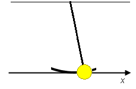

Prerequisites
The applet simulates the motion of a simple pendulum in its simple-harmonic-motion (SHM) approximation. Students should be familiar with the general properties of SHM and the sense in which SHM is a good approximation to the motion of a simple pendulum at small amplitude. In particular, they should be familiar with the SHM-approximation to the displacement and velocity of a simple pendulum as a function of time. Students should be familiar with the concepts of kinetic and potential energy and energy conservation.
Learning Outcomes
Students will learn how to use energy conservation to obtain information about the potential energy of a simple pendulum. They will be able to describe the time dependence of the potential energy when the pendulum is oscillating and to explain how the potential energy depends on the displacement of the pendulum from its equilibrium position. They will learn that the energy of the simple pendulum is proportional to the square of the amplitude of oscillation of the pendulum.
Instructions
Students should know how the applet functions, as described in Help and ShowMe.
The applet should be open. The step-by-step instructions in the following text are to be done in the applet. You may need to toggle back and forth between instructions and applet if your screen space is limited.
 Kinetic Energy as a
Function of Time
Kinetic Energy as a
Function of Time
 Potential Energy as a
Function of Time
Potential Energy as a
Function of Time
 Potential Energy as a Function
of Position
Potential Energy as a Function
of Position
 Energy as a Function of
Amplitude
Energy as a Function of
Amplitude

Figure 1 below illustrates the x-axis that will be used to describe the motion of the simple pendulum.

Figure 1
We will use the bob's x-coordinate as the pendulum's position. The origin of the x-axis, x = 0, is at the bob's equilibrium position at the bottom of the swing.
For small amplitudes, the time dependence of the bob's x-coordinate is to a good approximation SHM. In the simulation and in this lesson, the time dependence of the bob's x-coordinate is taken to be SHM exactly.
The kinetic energy KE of a simple pendulum is a function of the time t. Let's find out how KE depends on t.
Exercise 1. RESET the applet. Set the amplitude to A = 0.50 m and the length of the pendulum to L = 3.00 m. Keep the mass of the pendulum bob and the magnitude of the acceleration due to gravity at their default values of m = 0.50 kg and g = 9.8 m/s2, respectively.
PLAY the motion from the pendulum's default position, which has the pendulum bob at its right-most position, at x = A, and observe the motion. Sketch graphs of both the bob's position (x) and velocity (vx) vs. time (t). On the graphs, mark the points where the bob passes its far right, far left, and equilibrium positions.
When done, display the applet's x vs. t and vx vs. t graphs to check your graphs.
Exercise 2. Continuing from Exercise 1, REWIND the applet and PLAY the motion again. Observe the size of the kinetic energy column during the motion, and sketch the kinetic energy KE of the oscillating pendulum vs. t. You may find it helpful to Step through the motion. On the graph, mark the points where the bob passes its far right, far left, and equilibrium positions. Make sure your graph is consistent with the vx vs. t graph obtained in Exercise 1. When done, display the applet's KE vs. t graph to check your graph.
Exercise 3. Write down general expressions in symbols for the bob's position x(t) and velocity vx(t) at time t for the motion played in Exercises 1 and 2 in terms of the amplitude A, angular frequency w, and time t. If you have difficulty with this Exercise, review the Lesson accompanying the applet "Simple Harmonic Motion (Pendulum)".
Using the expression for vx(t), write down an expression for KE(t) in terms of A, ω, the mass m, and, of course, t.
Answer. For the kinetic energy, you should obtain
 KE(t) =
(m/2)A2ω2 sin2
ωt
KE(t) =
(m/2)A2ω2 sin2
ωt (1)
(1)
Exercise 4. REWIND the applet, and STEP through the motion until the bob is as close to its equilibrium point as possible (the energy column would be entirely red at the equilibrium point). Record the value of the kinetic energy at this point from the Data box. Calculate this value using Equ.(1) above and compare your result to the value of KE in the Data box.
Calculate the kinetic energy at another instant during the pendulum's motion. Also, click Rewind, change some of system parameters, and Step the system to a time of your choice. Calculate the kinetic energy at these times from Equ.(1). Compare your values with those displayed in the Data box.

The potential energy of the simple pendulum is strictly speaking the gravitational potential energy of the pendulum-earth system. We will refer to it as the "potential energy of the pendulum" for short. Similarly, we will refer to the energy of the pendulum-earth system as the "energy of the pendulum".
The mechanical energy E, energy for short, of the simple pendulum stays constant during the pendulum's motion (if the motion is undamped, as it is in the applet). One says the energy is conserved. The energy is the sum of kinetic and potential energy,
 E = KE + PE.
E = KE + PE.  (2)
(2)
PLAY the motion and observe how there is an ongoing conversion of potential into kinetic energy or vice versa during the motion such that the sum of the two energies remains constant.
In this section, you will use Equ.(2) together with Equ.(1) to obtain information about the time dependence of the potential energy.
Exercise 1. RESET the applet. Set the amplitude to A = 0.50 m and the length of the pendulum to L = 3.00 m. Keep the mass of the pendulum bob and the magnitude of the acceleration due to gravity at their default values of m = 0.50 kg and g = 9.8 m/s2, respectively. These are the same settings as at the beginning of the preceding section.
PLAY the motion, and sketch a graph of the potential energy as function of time. Mark the points where the bob passes its far right, far left, and equilibrium positions. When done, compare your sketch to the graph drawn by the applet.
Exercise 2. Continuing from Exercise 1, determine the value of the potential energy at the bob's far right and far left positions and the value of the mechanical energy as follows.
The potential energy of any system is defined up to an additive constant whose value one can choose freely to suit one's convenience. In the applet, as is commonly done for the present system, this constant is chosen so that the potential energy of the pendulum is 0 when the pendulum is at its equilibrium position. Therefore, at this point, the mechanical energy E is equal to the kinetic energy KE.
When the bob is either at its far right or far left positions, the bob is momentarily at rest and therefore its kinetic energy equal to zero. Thus, Equ.(2) implies that E = PE at this point.
Therefore, since E is constant during the motion, the potential energy at the far right or far left is equal to the kinetic energy when the bob is passing its equilibrium position, which is the maximum kinetic energy:
 PEright,left = E =
KEmax.
PEright,left = E =
KEmax.  (3)
(3)
Use Equ.(3) combined with Expression (1) for the kinetic energy, to derive a general expression for the potential energy at the far right or far left of the motion and for the energy E. Hint: what is the maximum value of sin2 ωt?
Answer. Since the maximum value of the sine function and that of its square are equal to 1, Equ.(1) implies
 PEright,left = E =
(m/2)A2ω2.
PEright,left = E =
(m/2)A2ω2.  (4)
(4)
Use Equ.(4) to calculate the values of PEright,left and E for the present applet settings. Compare your results to the values in the Data box and also with the value of the kinetic energy near the equilibrium point determined in Exercise 4 of the previous section. The latter may not be quite equal to KEmax if you stopped the motion not exactly at the equilbrium point.
Exercise 3. In the Lesson "Simple Harmonic Motion (Pendulum)" accompanying the Pendulum applet it is shown that the angular frequency ω is related to the magnitude due to gravity g and the length L of the pendulum by
 ω2 =
g / L .
ω2 =
g / L . (5)
(5)
Substitute this expression for ω2 into Equ.(4) to obtain an expression for the energy in terms of m, g, L, and A.
The result is
 PEright,left = E =
(1/2)(mg/L)A2 .
PEright,left = E =
(1/2)(mg/L)A2 . (6)
(6)
Substitute the present values into Equ.(6) and check if the resulting value of PEright,left agrees with that obtained in Exercise 2.
Exercise 4. Substitute Expression (1) for the kinetic energy into Equ.(2) to obtain an expression for the potential energy at time t. Into the resulting equation for PE(t), substitute Expression (4) for E and simplify. You should obtain the following equation for PE(t):
 PE(t) =
(m/2)A2ω2 [1 - sin2
ωt] .
PE(t) =
(m/2)A2ω2 [1 - sin2
ωt] . (7)
(7)
Using Equ.(5), this can be rewritten as
 PE(t) =
(1/2)(mg/L)A2 [1 -
sin2 ωt]
.
PE(t) =
(1/2)(mg/L)A2 [1 -
sin2 ωt]
. (8)
(8)
Simplify Equ.(8) by using the standard trigonometric identity
 sin2 θ + cos2 θ
= 1 .
sin2 θ + cos2 θ
= 1 . (9)
(9)
Equ.(8) will simplify to
 PE(t) =
(1/2)(mg/L)A2
cos2 ωt
.
PE(t) =
(1/2)(mg/L)A2
cos2 ωt
. (10)
(10)
Check that the graph you sketched in Exercise 1 is consistent with this equation. Explain in words why you think the two are consistent. Discuss whether Equ.(10) has the right behavior at the far right, far left, and equilibrium positions of the motion.
PLAY and PAUSE the motion at some instant, and use Equ.(10) to calculate the value of PE at this instant. Compare your result to that shown in the Data box.
In Exercise 3 of the section "Kinetic Energy as a Function of Time", you were asked to write down a general expression for the position of the pendulum bob as a function of time, assuming the motion starts at t = 0 with the bob in its far right position.
The equation is
 x(t) = A cos
ωt .
x(t) = A cos
ωt . (11)
(11)
Substitute this expression for x(t) into Equ.(10) to obtain an expression for the potential energy as function of position, instead of time. The result will be
 PE(x) = (1/2)(mg/L)
x2 .
PE(x) = (1/2)(mg/L)
x2 . (12)
(12)
Exercise 1. Sketch PE vs. x between x = -A and x = A. What is the name of this kind of a curve?
Exercise 2. Discuss if Equ.(12) is consistent with Equ.(6).
Exercise 3. RESET the applet. Set the amplitude to A = 0.50 m and the length of the pendulum to L = 3.00 m. Keep the mass of the pendulum bob and the magnitude of the acceleration due to gravity at their default values of m = 0.50 kg and g = 9.8 m/s2, respectively. These settings were used previously.
Drag the pendulum bob all the way to the left, by clicking on the bob and dragging. The bob should be at x = -0.50 m. Calculate the corresponding value of PE from Equ.(12), and compare your result to the value in the Data box.
Drag the weight to the right to x = -0.40 m, and again calculate PE. Observe the blue potential energy column and the rate at which it changes. Continue doing this for x = -0.30 m, x = -0.20 m, x = -0.10 m, x = 0, and then for positive x in steps of 0.10 m. Make a table of the values of PE vs. x. Discuss where the rate at which PE changes is greatest: near the far right of the oscillation, or near the far left or near the equilibrium point.
For each 0.10-m interval, calculate the average slope ΔPE / Δx of the potential energy curve over the interval from x to x + 0.10 m, and compare this average slope to the x-component of the net force acting on the bob at the midpoint of this interval, i.e., at x + 0.05 m. To calculate the net force, use the expression for the acceleration ax derived in an Appendix to the Lesson accompanying the applet "Simple Harmonic Motion (Pendulum)",
 ax = - (g/L) x ,
ax = - (g/L) x ,
 (13)
(13)
and multiply by the mass m.
Answer. You should find that
 Fx,mid = - ΔPE /
Δx
Fx,mid = - ΔPE /
Δx (14)
(14)
for each of the 0.10-m intervals. Note the minus sign in this equation. When the slope of the potential energy curve is positive, the net force is negative. Does that make sense?
You could make the x-interval smaller and smaller and would find Equ.(14) to be true always. In the limit of vanishing interval size, the average slope over an interval would become the slope at a point. This way one can prove that
The x-component of the net force acting on the pendulum bob at a given displacement x from equilibrium is equal to the negative slope at that point of the potential energy taken as a function of x.
The mathematical symbol for slope (also called derivative), as applied to the present case, is dPE / dx. With this notation,
 Fx = - dPE /
dx
Fx = - dPE /
dx (15)
(15)
Equ.(6) above gives the energy of the simple pendulum in terms of the amplitude A, the mass m, the magnitude g of the acceleration due to gravity, and the length L of the pendulum. Note that the energy depends on the square of the amplitude, not the first power of the amplitude.
Exercise 1. RESET the applet, and set the amplitude to A = 0.17 m, the length of the pendulum to L = 3.00 m, and the mass of the pendulum bob to m = 1.00 kg. Keep the magnitude of the acceleration due to gravity at its default value of g = 9.8 m/s2. Display the Data box.
Record the value of the energy E. Vary the amplitude with the slider from 0.17 m to 0.51 m, i.e., by a factor of 3, and record the corresponding values of E for several values of the amplitude along the way. Plot a graph of E vs. A and demonstrate that it exhibits the quadratic dependence on A from Equ.(6).
Comment. The pendulum's potential energy is really gravitational potential energy. The gravitational potential energy of the bob is equal to mgh where h is the bob's elevation above the bob's bottom position. One can show that this expression is consistent with Expression (12) for the potential energy by showing that, for small amplitudes,
 mgh = (1/2)(mg/L)
x2 .
mgh = (1/2)(mg/L)
x2 . (16)
(16)